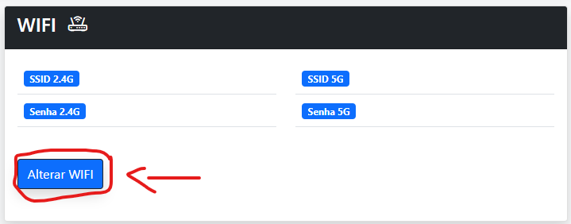
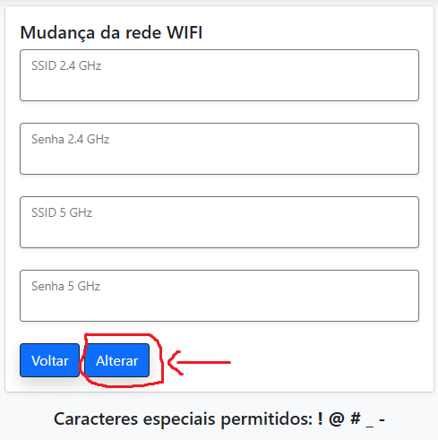

Troca de Senha e Nome Wi-Fi - CAT | TrixNet
Sempre que for necessário alterar a senha do Wi-Fi, utilize o Trixwatch para garantir que a nova configuração seja salva no sistema de rollback.
⚠️ Atenção: Se a alteração não for feita pelo Trixwatch, as configurações do Wi-Fi serão perdidas ao reiniciar ou resetar o modem de fibra.
Passo a Passo para Alteração da Senha Wi-Fi
1. Acesse o Trixwatch, pesquise pela ONU correspondente e clique em "Info".
2. Vá até a aba "Wi-Fi" e clique em "Alterar Wi-Fi".
3. Preencha os campos conforme indicado pelo Trixwatch e confirme a alteração.
📌 Observações:
A senha do Wi-Fi pode conter apenas os seguintes caracteres especiais: ! @ # _ - (nenhum outro além desses).
Não é permitido o uso de acentos ou espaços.
A senha deve ter, no mínimo, 8 caracteres.